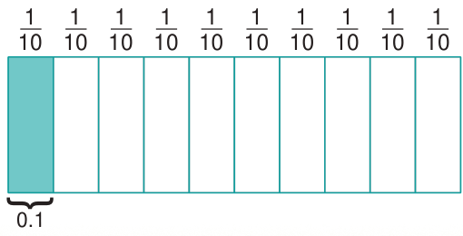

Sura ya Nane
Desimali
Utangulizi
Katika sura hii, utajifunza kubadili sehemu kuwa desimali, kujumlisha na kutoa desimali.
Umahiri utakaoujenga utakuwezesha kutumia dhana ya desimali katika vipimo, ujenzi, kubadili fedha, michezo, hospitali, afya na ukakamavu na matumizi mengine ya maisha ya kila siku.
Dhana ya desimali
Desimali ni namba zinazojumuisha namba nzima na sehemu zikitenganishwa na nukta.
Desimali ni mfumo wa kuhesabu ambao asili yake ni kizio cha kumi.
Chunguza mchoro ufuatao unaofafanua dhana ya desimali.

Fikiri
Maisha bila matumizi ya namba za desimali
0.1
HISABATI DRS 4 PB 2024.indd 126
06/11/2024 17:17:18